Business Forecasting
Since W07, one regressor has forecast the daily trips:
\[\widehat{\text{trips}} = 16{,}893 + 723.6 \times \text{temp}, \qquad R^2 = 0.088\]
Temperature explains 8.8% of the day-to-day movement in trips. The fleet manager needs a better forecast.
What else moves the number of trips on a given day? Write down your guesses. For each one: can we measure it, and which way should it push trips?
Take two guesses: days off and pollution.
The regression to write:
\[\text{trips}_i = \beta_0 + \cssId{mt-g1}{\beta_1}\,\text{temp}_i + \cssId{mt-g2}{\beta_2}\,\text{dayoff}_i + \cssId{mt-g3}{\beta_3}\,\text{pm25}_i + u_i\]
Each \(\beta\) is the change in trips when only its own variable changes and the others are held fixed. OLS finds all four numbers at once.
bikes holds the 781 weekdays of W07–W09: bikes$trips, bikes$temp, bikes$dayoff (1 on a holiday or during the Christmas break) and bikes$pm25 (pollution that day, PM2.5 in μg/m³).
How much better does the forecast get with days off and pollution? How many trips should the fleet expect on a working day at 20 °C with PM2.5 at 25 μg/m³?
bikes$trips on bikes$temp, bikes$dayoff and bikes$pm25.dayoff and the slope on pm25. Does pollution help the forecast?predict(reg, data.frame(temp = 20, dayoff = 0, pm25 = 25)).
\(R^2\) rises from 0.088 to 0.559 and the typical miss falls from 5,302 to 3,691 trips. A day off has about 15,900 fewer trips than a working day at the same temperature and pollution. One more μg/m³ of PM2.5 goes with about 9 more trips, and its T statistic is only 0.66: once the days off are in, pollution adds nothing to the forecast. The forecast for a working day at 20 °C with PM2.5 at 25 μg/m³ is about 31,400 trips.
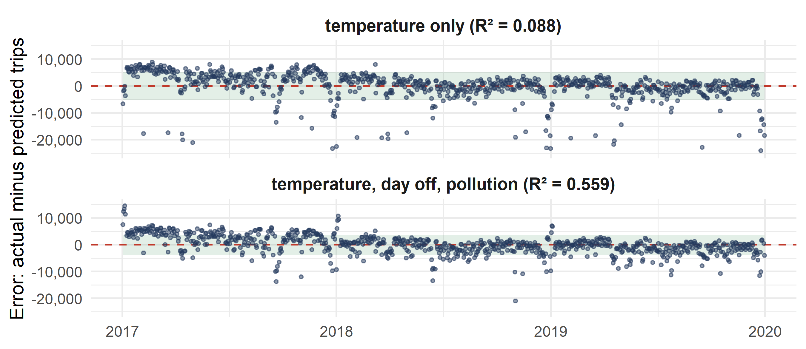
\[\text{wage}_i = \beta_0 + \beta_1\,\text{educ}_i + \beta_2\,\text{exper}_i + \beta_3\,\text{tenure}_i + \beta_4\,\text{female}_i + u_i\]
\(\beta_4\) is the gap between a woman and a man with the same education, experience and tenure: the part of the pay gap these three cannot explain.
\[\widehat{\text{wage}}_i = \underset{(0.725)}{-1.57} + \underset{(0.0493)}{0.572}\,\text{educ}_i + \underset{(0.0116)}{0.0254}\,\text{exper}_i + \underset{(0.0212)}{0.141}\,\text{tenure}_i - \underset{(0.265)}{1.81}\,\text{female}_i\]
\(n\) = 526 workers, \(R^2\) = 0.364. Standard errors in parentheses. US workers in 1976, wooldridge package (wage1).
With the same education, experience and tenure, a woman earns 1.81 dollars an hour less than a man (\(T = -6.84\)).
\[\text{price}_i = \beta_0 + \beta_1\,\text{litres}_i + \beta_2\,\text{convenience}_i + \beta_3\,\text{heineken}_i + \beta_4\,\text{rivals}_i + \beta_5\,\text{income}_i + u_i\]
\(\beta_2\) asks whether a convenience store charges more than a supermarket for a pack of the same size and the same brewer, with the same competition nearby and the same local income.
\[\widehat{\text{price}}_i = \underset{(2.12)}{6.57} + \underset{(0.546)}{50.5}\,\text{litres}_i + \underset{(2.35)}{3.42}\,\text{convenience}_i + \underset{(1.29)}{9.83}\,\text{heineken}_i + \underset{(0.303)}{0.288}\,\text{rivals}_i - \underset{(0.199)}{0.0238}\,\text{income}_i\]
\(n\) = 2,252 packs, \(R^2\) = 0.828. Standard errors in parentheses. PROFECO, Quién es Quién en los Precios, November 2025; income from INEGI, Encuesta Intercensal 2025.
A convenience store charges 3.42 pesos more for the same pack, but \(T = 1.46\): not significant at 5%. The brewer matters more: a Heineken brand costs 9.83 pesos more than a Grupo Modelo brand in a pack of the same size.
\[\text{wage}_i = \beta_0 + \beta_1\,\text{points}_i + \beta_2\,\text{rebounds}_i + \beta_3\,\text{assists}_i + \beta_4\,\text{exper}_i + \beta_5\,\text{allstar}_i + u_i\]
\(\beta_5\) asks what the All-Star label adds for players with the same points, rebounds, assists and years in the league.
\[\widehat{\text{wage}}_i = \underset{(107)}{-163} + \underset{(11.9)}{76.7}\,\text{points}_i + \underset{(18.6)}{80.2}\,\text{rebounds}_i + \underset{(25.2)}{8.82}\,\text{assists}_i + \underset{(12.5)}{82.8}\,\text{exper}_i + \underset{(163)}{54.5}\,\text{allstar}_i\]
\(n\) = 269 players, \(R^2\) = 0.551. Standard errors in parentheses. NBA salaries in the 1994-95 season, wooldridge package (nbasal).
One more point per game adds 76.7 thousand dollars a year. The All-Star label adds 54.5 thousand, but \(T = 0.33\): not significant. Players with the same numbers earn about the same, All-Star or not.
\[\text{like}_i = \beta_0 + \beta_1\,\text{attractive}_i + \beta_2\,\text{intelligent}_i + \beta_3\,\text{fun}_i + \beta_4\,\text{ambitious}_i + \beta_5\,\text{shared}_i + u_i\]
\(\beta_1\) asks how much more a person likes a date they find one point more attractive, comparing dates rated the same on intelligence, fun, ambition and shared interests. A dating app can use it to decide what to show first on a profile.
\[\widehat{\text{like}}_i = \underset{(0.297)}{0.304} + \underset{(0.0344)}{0.390}\,\text{attractive}_i + \underset{(0.0456)}{0.165}\,\text{intelligent}_i + \underset{(0.0369)}{0.232}\,\text{fun}_i - \underset{(0.0361)}{0.0231}\,\text{ambitious}_i + \underset{(0.0283)}{0.181}\,\text{shared}_i\]
\(n\) = 476 ratings, \(R^2\) = 0.618. Standard errors in parentheses. Speed-dating experiment with Columbia University graduate students: 276 dates, each rated by both people. Lock5Data package (SpeedDating), from Gelman and Hill (2007).
Looks have the largest slope: one more point adds 0.39 points of liking. Ambition adds nothing once the other four are held fixed (\(T = -0.64\)), although alone it moves with liking (correlation 0.35).
\[\text{salary}_i = \beta_0 + \beta_1\,\text{roe}_i + \beta_2\,\text{sales}_i + \beta_3\,\text{ros}_i + u_i\]
\(\beta_1\) asks whether a better-run firm pays its CEO more, comparing firms of the same size.
\[\widehat{\text{salary}}_i = \underset{(228)}{864} + \underset{(11.5)}{22.0}\,\text{roe}_i + \underset{(0.00895)}{0.0155}\,\text{sales}_i - \underset{(1.45)}{1.11}\,\text{ros}_i\]
\(n\) = 209 CEOs, \(R^2\) = 0.032. Standard errors in parentheses. US CEOs in 1990, wooldridge package (ceosal1).
One more point of return on equity adds 22.0 thousand dollars of salary (\(T = 1.91\), not significant at 5%). With \(R^2 = 0.032\), the firm’s results explain almost none of CEO pay.
houses holds 88 house sales from the wooldridge package (hprice1):
houses$price — sale price, thousands of dollarshouses$bdrms — number of bedroomshouses$sqrft — size of the house, square feethouses$price on houses$bdrms. How much is one more bedroom worth?houses$price on houses$bdrms and houses$sqrft. How much is one more bedroom worth now, for a house of the same size?houses$bdrms and houses$sqrft. Why did the bedroom slope fall?A second regressor goes in with a plus sign: lm(y ~ x1 + x2, data = df).
Alone, one more bedroom goes with 62.0 thousand dollars more. For a house of the same size, it adds only 15.2 thousand, and that is not significant. The correlation is 0.53: houses with more bedrooms are bigger. Alone, the bedroom slope took the credit for the size.
| Model | Bedroom slope | Size slope | R² |
|---|---|---|---|
| price on bedrooms | 62.0 | 0.258 | |
| price on bedrooms and size | 15.2 | 0.128 | 0.632 |
With the lot and the style held fixed too:
\[\widehat{\text{price}}_i = \underset{(29.6)}{-24.1} + \underset{(9.52)}{11.0}\,\text{bdrms}_i + \underset{(0.0133)}{0.124}\,\text{sqrft}_i + \underset{(0.000643)}{0.00208}\,\text{lotsize}_i + \underset{(14.6)}{13.7}\,\text{colonial}_i\]
\(n\) = 88 houses, \(R^2\) = 0.676. Standard errors in parentheses. House sales in the Boston area, 1990, wooldridge package (hprice1).
One more bedroom adds 11.0 thousand dollars, but \(T = 1.16\): not significant. Each extra square foot adds 124 dollars.
The rest of this week asks the same question of Mexican data from October 2025: how late will a flight land, once the other causes are held fixed?
You plan the day for an airline at Mexico City airport (AICM). A flight from Monterrey left 40 minutes late. The gate, the ground crew and the passengers with a connection all need one number: how many minutes late will it land?
What moves the arrival delay? Write down your guesses. For each one: can we measure it, and which way should it push the delay?
Each cause needs its own number, measured with the others held fixed.
flights holds 11,887 flights that landed at Mexico City airport (AICM) in October 2025, from 111 airports. One row is one flight.
| Column | What it is |
|---|---|
arr_delay |
minutes late at arrival (negative = early) |
dep_delay |
minutes late at departure (negative = early) |
sched_time |
scheduled flight time, minutes |
origin, code, country, intl |
where the flight comes from; intl is 1 for a flight from outside Mexico |
airline |
the airline |
date, weekday, hour |
day and hour of the scheduled arrival |
rain, wind, temp |
weather at AICM in that hour: rain (mm), wind (km/h), temperature (°C) |
Schedules include slack, so most flights land before the scheduled time: only 14% land late.
Sources: arrival records of a public flight tracker; weather from the Open-Meteo historical archive. 359 records with extreme or impossible times are left out.
Before the flights: how OLS finds several coefficients at once. The same rule as W07, the smallest sum of squared residuals.
A forecast for each flight needs three numbers:
\[\widehat{\text{arr_delay}}_i = b_0 + b_1\,\text{dep_delay}_i + b_2\,\text{sched_time}_i\]
Any three numbers give a forecast for each of the 11,887 flights, and an error for each: \(e_i = \text{arr_delay}_i - \widehat{\text{arr_delay}}_i\).
| Guess | b₀ | b₁ | b₂ | Monterrey flight | SSE, millions | Typical miss |
|---|---|---|---|---|---|---|
| every flight lands on time | 0 | 0 | 0 | 0 | 11.65 | 31.3 |
| every flight lands at the average delay | −14.2 | 0 | 0 | −14.2 | 9.25 | 27.9 |
| 30 minutes early, plus 0.8 of the departure delay | −30 | 0.8 | 0 | 2 | 2.39 | 14.2 |
\(SSE = \sum e_i^2\), the sum of the squared errors. Typical miss \(= \sqrt{SSE/n}\), in minutes. The Monterrey flight left 40 minutes late and is scheduled for 100 minutes.
The best three numbers bring the \(SSE\) down to 2.14 million, a typical miss of 13.4 minutes. Which three are they?
\[SSE(b_0, b_1, b_2) = \sum_{i=1}^{n} \left( \text{arr_delay}_i - b_0 - b_1\,\text{dep_delay}_i - b_2\,\text{sched_time}_i \right)^2\]
Write \(y_i\) for \(\text{arr_delay}_i\), \(x_{i1}\) for \(\text{dep_delay}_i\) and \(x_{i2}\) for \(\text{sched_time}_i\):
\[SSE(b_0, b_1, b_2) = \sum_{i=1}^{n} \left( y_i - b_0 - b_1 x_{i1} - b_2 x_{i2} \right)^2\]
Stack the 11,887 flights, one row per flight. Hover over an entry to see what it is.
\[\mathbf{y} = \begin{bmatrix} \cssId{mt-mf-y1}{y_1} \\ \cssId{mt-mf-y2}{y_2} \\ \vdots \\ \cssId{mt-mf-yn}{y_n} \end{bmatrix} = \begin{bmatrix} -15 \\ -14 \\ \vdots \\ 99 \end{bmatrix} \qquad \mathbf{X} = \begin{bmatrix} \cssId{mt-mf-one}{1} & \cssId{mt-mf-x11}{x_{11}} & \cssId{mt-mf-x12}{x_{12}} \\ 1 & \cssId{mt-mf-x21}{x_{21}} & \cssId{mt-mf-x22}{x_{22}} \\ \vdots & \vdots & \vdots \\ 1 & \cssId{mt-mf-xn1}{x_{n1}} & \cssId{mt-mf-xn2}{x_{n2}} \end{bmatrix} = \begin{bmatrix} 1 & 6 & 99 \\ 1 & 10 & 221 \\ \vdots & \vdots & \vdots \\ 1 & 132 & 94 \end{bmatrix}\]
arr_delay, one entry per flight.dep_delay and sched_time.\[\underbrace{\begin{bmatrix} y_1 \\ y_2 \\ \vdots \\ y_n \end{bmatrix}}_{\mathbf{y}:\ n \times 1} = \underbrace{\begin{bmatrix} 1 & x_{11} & x_{12} & \cdots & \cssId{mt-mf-x1k}{x_{1k}} \\ 1 & x_{21} & x_{22} & \cdots & x_{2k} \\ \vdots & \vdots & \vdots & & \vdots \\ 1 & x_{n1} & x_{n2} & \cdots & x_{nk} \end{bmatrix}}_{\mathbf{X}:\ n \times (k+1)} \underbrace{\begin{bmatrix} \cssId{mt-mf-b0}{\beta_0} \\ \cssId{mt-mf-b1}{\beta_1} \\ \cssId{mt-mf-b2}{\beta_2} \\ \vdots \\ \cssId{mt-mf-bk}{\beta_k} \end{bmatrix}}_{\boldsymbol{\beta}:\ (k+1) \times 1} + \underbrace{\begin{bmatrix} \cssId{mt-mf-u1}{u_1} \\ u_2 \\ \vdots \\ u_n \end{bmatrix}}_{\mathbf{u}:\ n \times 1}\]
dep_delay and \(x_{i2}\) is sched_time.Pick any guess \(\mathbf{b} = (b_0, b_1, \dots, b_k)\). Every flight gets a forecast and an error.
\(\displaystyle \hat{\mathbf{y}} = \mathbf{X}\mathbf{b} = \begin{bmatrix} b_0 + b_1 x_{11} + \cdots + b_k x_{1k} \\ \vdots \\ b_0 + b_1 x_{n1} + \cdots + b_k x_{nk} \end{bmatrix}\)
The forecasts Row \(i\) of \(\mathbf{X}\) times \(\mathbf{b}\): the forecast for flight \(i\).
\(\displaystyle \mathbf{e}(\mathbf{b}) = \mathbf{y} - \mathbf{X}\mathbf{b} = \begin{bmatrix} y_1 - b_0 - b_1 x_{11} - \cdots - b_k x_{1k} \\ \vdots \\ y_n - b_0 - b_1 x_{n1} - \cdots - b_k x_{nk} \end{bmatrix}\)
The errors Each flight’s outcome minus its forecast. Change \(\mathbf{b}\) and every error changes.
\(\displaystyle SSE(\mathbf{b}) = \sum_i e_i^2 = \begin{bmatrix} e_1 & \cdots & e_n \end{bmatrix} \begin{bmatrix} e_1 \\ \vdots \\ e_n \end{bmatrix} = \mathbf{e}^\top \mathbf{e}\)
The sum of squares A row times a column: \(e_1 e_1 + \cdots + e_n e_n\).
\(\displaystyle \boxed{SSE(\mathbf{b}) = (\mathbf{y} - \mathbf{X}\mathbf{b})^\top (\mathbf{y} - \mathbf{X}\mathbf{b})}\)
A function of \(\mathbf{b}\) only \(\mathbf{y}\) and \(\mathbf{X}\) are the data and stay fixed. OLS picks the \(\mathbf{b}\) that makes this smallest.
At the smallest \(SSE\), the derivative with respect to \(\mathbf{b}\) is zero, as in W07. Here it is in matrices.
\(\displaystyle SSE(\mathbf{b}) = (\mathbf{y} - \mathbf{X}\mathbf{b})^\top (\mathbf{y} - \mathbf{X}\mathbf{b})\)
Start from the errors The sum of squared errors, as a function of \(\mathbf{b}\).
\(\displaystyle = \mathbf{y}^\top\mathbf{y} - \mathbf{y}^\top\mathbf{X}\mathbf{b} - \mathbf{b}^\top\mathbf{X}^\top\mathbf{y} + \mathbf{b}^\top\mathbf{X}^\top\mathbf{X}\,\mathbf{b}\)
Multiply out Like \((a - c)(a - c)\), with \((\mathbf{X}\mathbf{b})^\top = \mathbf{b}^\top\mathbf{X}^\top\).
\(\displaystyle = \mathbf{y}^\top\mathbf{y} - 2\,\mathbf{b}^\top\mathbf{X}^\top\mathbf{y} + \mathbf{b}^\top\mathbf{X}^\top\mathbf{X}\,\mathbf{b}\)
The two middle terms are equal \(\mathbf{y}^\top\mathbf{X}\mathbf{b}\) is one number, so it equals its own transpose, \(\mathbf{b}^\top\mathbf{X}^\top\mathbf{y}\).
\(\displaystyle \frac{\partial SSE}{\partial \mathbf{b}} = -2\,{\color{#2471a3}{\mathbf{X}^\top}}{\color{#e67e22}{\mathbf{y}}} + 2\,{\color{#2471a3}{\mathbf{X}^\top\mathbf{X}}}\,\mathbf{b}\)
Derivative in \(\mathbf{b}\) One derivative per coefficient, stacked in a column. As with one number: \(-2bc\) gives \(-2c\), and \(ab^2\) gives \(2ab\).
\(\displaystyle -2\,{\color{#2471a3}{\mathbf{X}^\top}}({\color{#e67e22}{\mathbf{y}}} - {\color{#2471a3}{\mathbf{X}}}\mathbf{b}) = \mathbf{0} \;\Rightarrow\; \boxed{{\color{#2471a3}{\mathbf{X}^\top}} \mathbf{e} = \mathbf{0}}\)
Set it to zero, factor out \(-2\mathbf{X}^\top\) \(\mathbf{y} - \mathbf{X}\mathbf{b}\) is \(\mathbf{e}\). At the OLS coefficients, \(\mathbf{X}^\top\mathbf{e} = \mathbf{0}\).
Write \(\mathbf{X}^\top\mathbf{e} = \mathbf{0}\) out. Row \(j\) of \(\mathbf{X}^\top\) is column \(j\) of \(\mathbf{X}\): one regressor, across all flights.
\[\mathbf{X}^\top \mathbf{e} = \begin{bmatrix} 1 & 1 & \cdots & 1 \\ x_{11} & x_{21} & \cdots & x_{n1} \\ \vdots & \vdots & & \vdots \\ x_{1k} & x_{2k} & \cdots & x_{nk} \end{bmatrix} \begin{bmatrix} e_1 \\ e_2 \\ \vdots \\ e_n \end{bmatrix} = \begin{bmatrix} \cssId{mt-xe-sum0}{\sum_i e_i} \\ \cssId{mt-xe-sum1}{\sum_i x_{i1} e_i} \\ \vdots \\ \cssId{mt-xe-sumk}{\sum_i x_{ik} e_i} \end{bmatrix} = \begin{bmatrix} 0 \\ 0 \\ \vdots \\ 0 \end{bmatrix}\]
OLS stops only when no regressor can explain anything left in the errors: if the errors still moved with the departure delay, a different \(b_1\) would cut the \(SSE\).
\(\displaystyle {\color{#2471a3}{\mathbf{X}^\top}} \mathbf{e} = \mathbf{0}\)
Start from the condition At the OLS coefficients, the errors move with no regressor.
\(\displaystyle {\color{#2471a3}{\mathbf{X}^\top}} \left({\color{#e67e22}{\mathbf{y}}} - {\color{#2471a3}{\mathbf{X}}} \hat{\boldsymbol{\beta}}\right) = \mathbf{0}\)
Plug in the errors At the minimum, \(\mathbf{e} = \mathbf{y} - \mathbf{X}\hat{\boldsymbol{\beta}}\).
\(\displaystyle {\color{#2471a3}{\mathbf{X}^\top}} {\color{#e67e22}{\mathbf{y}}} - {\color{#2471a3}{\mathbf{X}^\top \mathbf{X}}}\, \hat{\boldsymbol{\beta}} = \mathbf{0}\)
Multiply out \(\mathbf{X}^\top\) multiplies each part of the bracket.
\(\displaystyle {\color{#2471a3}{\mathbf{X}^\top \mathbf{X}}}\, \hat{\boldsymbol{\beta}} = {\color{#2471a3}{\mathbf{X}^\top}} {\color{#e67e22}{\mathbf{y}}}\)
Move one term across The normal equations: one equation per coefficient.
\(\displaystyle \hat{\boldsymbol{\beta}} = \boxed{\cssId{mt-xtxinv}{(\mathbf{X}^\top \mathbf{X})^{-1}}\, \cssId{mt-xty}{\mathbf{X}^\top \mathbf{y}}}\)
Undo \(\mathbf{X}^\top \mathbf{X}\) Multiply both sides by its inverse, the matrix version of dividing. This is the formula on your formula sheet.
With one regressor and no intercept, \(\mathbf{X}^\top\mathbf{X} = \sum x_i^2\) and \(\mathbf{X}^\top\mathbf{y} = \sum x_i y_i\), so \(\hat{\beta} = \sum x_i y_i / \sum x_i^2\): how \(x\) moves with \(y\), divided by how \(x\) moves with itself. With many regressors it is the same division, done with matrices. lm() does it for you.
A colleague adds the scheduled time in hours, next to the scheduled time in minutes. What happens if both go into the same regression?
flights$sched_hours, the scheduled time in hours: flights$sched_time / 60.flights$arr_delay on flights$dep_delay, flights$sched_time and flights$sched_hours. What does summary() print for sched_hours? Why?The row for sched_hours shows NA: “1 not defined because of singularities”. sched_hours is sched_time times a fixed number, \(1/60\): an exact copy, so \(\mathbf{X}\) is not full rank. R keeps the first column and drops the copy.
One regressor first: how much of a late departure is still there at landing?
How many minutes late does a flight land for each minute it leaves late? How early does a flight land if it leaves on time?
flights$arr_delay on flights$dep_delay.\(\widehat{\text{arr_delay}} = -33.48 + 0.910 \times \text{dep_delay}\). Each minute late at departure adds 0.91 minutes at arrival: the crew makes up about 0.09 of each lost minute, about 5 seconds per minute. A flight that leaves on time lands about 33 minutes before its scheduled arrival: that is the slack in the schedule. The departure delay explains 75.5% of the variation in arrival delays.
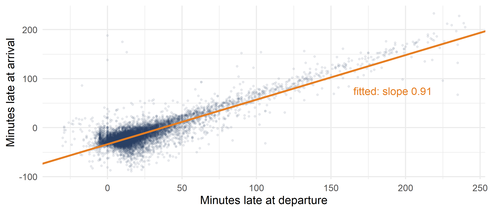
Two causes in one model, and what “held fixed” means.
A long flight has more time in the air, and more slack in its schedule, to make up a late departure.
\[\text{arr_delay}_i = \cssId{mt-b0}{\beta_0} + \cssId{mt-b1}{\beta_1}\,\text{dep_delay}_i + \cssId{mt-b2}{\beta_2}\,\text{sched_time}_i + \cssId{mt-u}{u_i}\]
sched_time runs from 40 minutes to almost 16 hours. From Monterrey it is about 100 minutes; from Madrid about 720.For two flights that left equally late, does the one with the longer schedule land earlier? By how many minutes per hour of schedule?
flights$arr_delay on flights$dep_delay and flights$sched_time.sched_time slope to one extra hour of scheduled flight.dep_delay slope move from Exercise 4? How much did \(R^2\) rise?A second regressor goes in with a plus sign: lm(y ~ x1 + x2, data = df). One hour is 60 minutes.
\(\widehat{\text{arr_delay}} = -29.60 + 0.922 \times \text{dep_delay} -0.0217 \times \text{sched_time}\).
For flights with the same scheduled time, each minute late at departure adds 0.92 minutes at arrival. For flights that left equally late, each extra hour in the schedule takes 1.30 minutes off the arrival delay. A 720-minute flight from Madrid lands about 13.5 minutes earlier than a 100-minute flight from Monterrey that left just as late.
The departure slope barely moved: 0.910 to 0.922. \(R^2\) rose from 0.755 to 0.769.
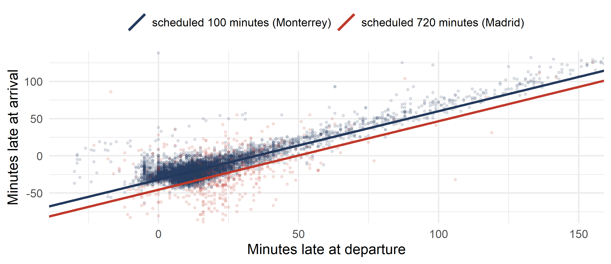
dayoff for Ecobici, works the same way with only two values: it moves the whole line up or down.With one regressor, the fitted values lie on a line. With the scheduled time added, they lie on a flat plane. Drag the picture to turn it.
| Regressors | The fitted values lie on | Picture |
|---|---|---|
| 1 | a line | 2D: the scatter and its line |
| 2 | a flat plane | 3D: the plane you just turned |
| 3 or more | a flat surface in 4 or more dimensions | none |
Add the rain at AICM, in mm in the hour:
\[\widehat{\text{arr_delay}}_i = \underset{(0.215)}{-29.6} + \underset{(0.00464)}{0.922}\,\text{dep_delay}_i - \underset{(0.000804)}{0.0217}\,\text{sched_time}_i + \underset{(0.146)}{0.0524}\,\text{rain}_i\]
\(n\) = 11,887 flights, \(R^2\) = 0.769. Standard errors in parentheses.
Two flights leave 40 minutes late: one from Monterrey, scheduled for 100 minutes, and one from Madrid, scheduled for 720 minutes. The gate team needs the expected arrival delay of each.
flights$arr_delay on flights$dep_delay and flights$sched_time.predict().Both flights fit in one data frame: data.frame(dep_delay = c(40, 40), sched_time = c(100, 720)).
The Monterrey flight should land about 5.1 minutes late; the Madrid flight about 8.4 minutes early.
Adding the scheduled time barely moved the departure slope. When does a new regressor move one?
Back to Ecobici. On smoggy days, do fewer people ride? The city wants to know how many trips one more μg/m³ of PM2.5 costs.
Before you fit anything, think about one more thing that changes from day to day: the rain.
bikes$rain is the rain that day in Mexico City, in mm. It is a continuous variable, not a 0/1 dummy: 0 on a dry day, up to 31 mm on the wettest.
Are smoggy days typically wet or dry?
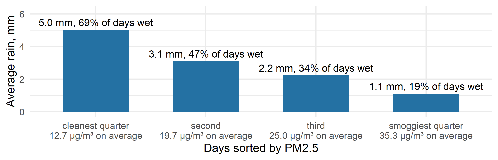
Smoggy days are mostly dry: rain washes the air.
So a regression of trips on PM2.5 alone compares smoggy days, mostly dry, with clean days, often wet.
But rain also moves trips.
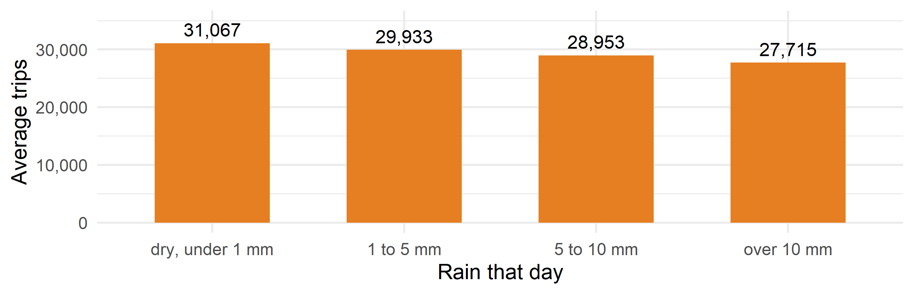
Working days only, so the holidays do not blur the picture.
So the PM2.5 slope alone partly measures the rain. The clean days lose riders to the rain, and that makes the gap between clean and smoggy days look smaller than the smog alone would make it.
Compare days with the same amount of rain but different smog. Then rain cannot explain the difference in trips: what is left is the smog.
Predict: with rain held fixed, will the smog effect be bigger, smaller, or the same as with PM2.5 alone?
bikes as in Exercise 1, plus bikes$rain: the rain that day in Mexico City, in mm.
bikes$trips on bikes$pm25. How many trips does one more μg/m³ cost?bikes$rain to the regression. How many trips does one more μg/m³ cost now?bikes$pm25 with bikes$rain.Alone, one more μg/m³ goes with 61.6 fewer trips. With rain held fixed, it costs 87.9.
Rain washes the air: the correlation is \(-0.29\). And rain keeps riders at home: each mm costs about 180 trips. So the clean days are often wet, empty days. Alone, pollution got the credit for the dry weather of the dirty days, and looked less harmful than it is.
Less smog brings more riders. But less smog also comes with more rain, and rain keeps riders at home. Move the slider, then hold rain fixed.
Alone, a slope compares high x with low x. They differ in x, and in everything that travels with x.
Holding z fixed compares cases with the same z, so z no longer travels with x.
Two regressors: \(x\) = PM2.5 and \(z\) = rain, both measured from their means, so the intercept drops out. Hover over any sum.
\(\displaystyle \hat{\boldsymbol{\beta}} = \begin{bmatrix} \hat{\beta}_x \\ \hat{\beta}_z \end{bmatrix} = (\mathbf{X}^\top\mathbf{X})^{-1}\,\mathbf{X}^\top\mathbf{y}\)
The OLS formula The same formula as in section 1, with the columns \(x\) and \(z\).
\(\displaystyle \mathbf{X}^\top\mathbf{X} = \begin{bmatrix} \cssId{mt-hf-xx}{\sum x_i^2} & \cssId{mt-hf-xz}{{\color{#c0392b}{\sum x_i z_i}}} \\ \cssId{mt-hf-xz2}{{\color{#c0392b}{\sum x_i z_i}}} & \cssId{mt-hf-zz}{\sum z_i^2} \end{bmatrix}, \quad \mathbf{X}^\top\mathbf{y} = \begin{bmatrix} \cssId{mt-hf-xy}{\sum x_i y_i} \\ \cssId{mt-hf-zy}{\sum z_i y_i} \end{bmatrix}\)
What goes in Sums of squares and products. The red cross term: how \(x\) and \(z\) move together.
\(\displaystyle (\mathbf{X}^\top\mathbf{X})^{-1} = \frac{1}{\cssId{mt-hf-det}{D}} \begin{bmatrix} \sum z_i^2 & \cssId{mt-hf-neg}{{\color{#c0392b}{-\sum x_i z_i}}} \\ {\color{#c0392b}{-\sum x_i z_i}} & \sum x_i^2 \end{bmatrix}\)
\(\displaystyle D = \sum x_i^2 \sum z_i^2 - \left(\sum x_i z_i\right)^2\)
Invert it The cross term comes back with a minus sign: the inverse discounts what \(x\) and \(z\) share.
\(\displaystyle \hat{\beta}_x = \frac{\cssId{mt-hf-top}{\sum z_i^2 \sum x_i y_i} - \cssId{mt-hf-sub}{{\color{#c0392b}{\sum x_i z_i \sum z_i y_i}}}}{D}\)
What it gives for \(x\) From the raw link of smog with trips, the formula takes out the part that runs through rain.
If \(x\) and \(z\) do not move together, \(\sum x_i z_i = 0\) and \(\hat{\beta}_x = \sum x_i y_i / \sum x_i^2\): the one-regressor slope of W07. Smog and rain do move together, so adding rain changed the smog slope.
workers holds 935 US men from the wooldridge package (wage2): workers$wage, monthly earnings in 1980 dollars; workers$educ, years of school; workers$IQ, IQ score.
How much more does one more year of school pay?
workers$wage on workers$educ. How many dollars a month go with one more year of school?workers$IQ to the regression. How many dollars now?workers$educ with workers$IQ.Alone, one more year of school goes with 60.2 dollars a month more. With IQ held fixed, it goes with 42.1.
Men with more school also have a higher IQ: the correlation is 0.52. Men with 16 years of school or more average an IQ of 112; men with 12 or less average 95. Alone, the schooling slope compares men who differ in school and in IQ, so it measures both. With IQ held fixed, it compares men with the same IQ, and only the school differs. Each IQ point goes with about 5.1 dollars a month.
More regressors always fit the sample at least as well. Is the gain worth it?
So far \(R^2\) has measured the fit. Each regressor we added raised it: in Exercise 1, days off and pollution took it from 0.088 to 0.559. That makes sense: the new regressors explain part of the errors the old model could not.
But \(R^2\) has a weakness. Suppose we add a regressor of pure random numbers. Does \(R^2\) still go up?
bikes$noise is such a column: random numbers with no link to trips. Add it to the regression of trips on temperature and days off. Predict: can \(R^2\) rise?
bikes$trips on bikes$temp and bikes$dayoff. Note the \(R^2\).bikes$noise to the regression. Note the \(R^2\) again. Did it rise?noise significant at 5%?summary(reg) prints the \(R^2\) as Multiple R-squared.
\(\displaystyle SSE_{\text{old}} = \min_{b_0,\, b_1,\, b_2} \sum_i \left( y_i - b_0 - b_1 x_{i1} - b_2 x_{i2} \right)^2\)
The old model OLS picks the smallest \(SSE\) with temperature and days off.
\(\displaystyle SSE_{\text{new}} = \min_{b_0, \dots, b_3} \sum_i \left( y_i - b_0 - b_1 x_{i1} - b_2 x_{i2} - b_3 x_{i3} \right)^2\)
Add the noise column One more coefficient to choose, \(b_3\).
\(\displaystyle b_3 = 0 \;\Rightarrow\; \text{the old model, with } SSE_{\text{old}}\)
One choice is to ignore it With its slope set to zero, the new column changes nothing.
\(\displaystyle \boxed{SSE_{\text{new}} \le SSE_{\text{old}} \;\Rightarrow\; R^2_{\text{new}} \ge R^2_{\text{old}}}\)
The best can only be as good or better OLS can always fall back on \(b_3 = 0\). \(SST\) does not change, so \(R^2 = 1 - SSE/SST\) cannot fall.
And it almost always rises. In a sample, random numbers are never exactly uncorrelated with the errors: in Exercise 9 the correlation of bikes$noise with the errors is \(-0.018\). Tiny, but OLS uses it to cut the \(SSE\) a little.
Take 120 Ecobici days, trips on temperature and days off. Add random columns, one at a time, up to 100.
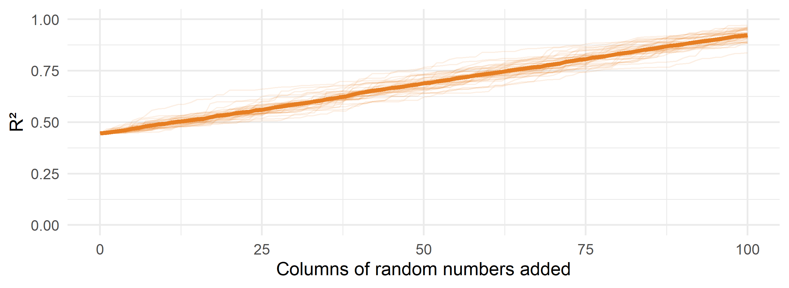
Judged by \(R^2\), the model with 100 random columns is the best one. That makes no sense.
Each coefficient needs a fee: keep a regressor only if what it adds to the fit pays for the coefficient it uses.
\[R^2 = 1 - \frac{SSE}{SST} \qquad\qquad \bar{R}^2 = 1 - \frac{\cssId{mt-sseadj}{SSE/(n-k-1)}}{\cssId{mt-sstadj}{SST/(n-1)}} = 1 - \frac{\cssId{mt-s2adj}{s^2}}{\cssId{mt-varyadj}{\text{var}(y)}}\]
All 781 Ecobici days, trips on temperature and days off: \(s\) = 3,690 trips and the standard deviation of trips is 5,548, so adjusted \(R^2\) is 1 − 3,690² / 5,548² = 0.558.
The same 120 Ecobici days. The first four regressors are real: temperature, day off, rain, PM2.5. After them come columns of random numbers. Move the slider and watch both numbers.
SSE and SST in billions of squared trips. Solid lines: one set of random columns. Dashed lines: the average over 10 sets.
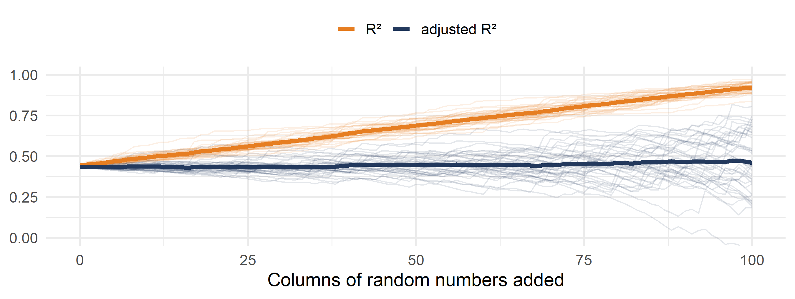
bikes$trips on bikes$temp and bikes$dayoff, then with bikes$noise added.noise?summary(reg) prints it as Adjusted R-squared, next to Multiple R-squared.
To compare models that differ in the number of regressors, use adjusted \(R^2\).
One route only: the 682 flights from Guadalajara, all scheduled for about 90 minutes.
Once the departure delay is known, does the weather at AICM help forecast the arrival delay?
gdl <- flights[flights$code == "GDL", ]. Regress gdl$arr_delay on gdl$dep_delay. Note the \(R^2\) and the adjusted \(R^2\).gdl$rain. Note both again. Is rain significant at 5%?rain with gdl$wind. Note both again.| Regressors | \(R^2\) | adjusted \(R^2\) | weather \(T\) |
|---|---|---|---|
| dep_delay | 0.8764 | 0.8762 | |
| dep_delay + rain | 0.8764 | 0.8761 | 0.12 |
| dep_delay + wind | 0.8768 | 0.8765 | -1.49 |
\(R^2\) never falls: with rain it rises only in the fifth decimal. The adjusted \(R^2\) falls with rain and rises with wind. Neither is significant at 5%: once the departure delay is known, the weather at AICM adds almost nothing.
Rain lowers the adjusted \(R^2\) and wind raises it a little. Neither is significant at 5%.
For the operations team: the departure delay carries the forecast, and a long schedule absorbs part of it. The weather at the airport adds almost nothing once the departure delay is known.
Do some airlines make up more time than others? That needs a regressor with several categories: week 11.
Give the manager the expected arrival delay of flights that leave 0, 30 and 60 minutes late, from Monterrey (100 scheduled minutes) and from Madrid (720), with one picture and one sentence.
flights$arr_delay on flights$dep_delay and flights$sched_time.predict().flights$arr_delay against flights$dep_delay.data.frame(dep_delay = c(0, 30, 60, 0, 30, 60), sched_time = c(100, 100, 100, 720, 720, 720)) holds the six cases.
From Monterrey: about -31.8, -4.1, 23.5 minutes. From Madrid: about -45.2, -17.6, 10.0 minutes (negative = early).
For the manager: a late departure carries almost minute for minute into the arrival (0.92 minutes per minute); a long schedule absorbs about 1.3 minutes per hour of flight; a Monterrey flight that leaves an hour late should still land about 24 minutes late.
predict().Next week: regressors with several categories, such as the airline, and interactions, with PROFECO shelf prices: whether small local stores price to their neighbourhood, and what the January 2026 tax did to drink prices.
Weekly exercise set: W10_exercises.pdf, with solutions in W10_solutions.pdf.
You can already solve exercises 2, 3 and 25, and most of 4, 5 and 6.
Not in these slides: 1 and 7(c) use regressors with several categories (week 11); 4(f), 5(i) and 6(b) use intervals for a coefficient or a forecast (week 12); 7(a)–(b) use a squared regressor, which this course does not cover.
Suggested before the next class, closest to the exam:
| Exercise | Topic | How |
|---|---|---|
| 2 | Grades on two GRE scores and a 0/1 regressor (metricsgrades) |
R with the data |
| 3 | Cigarette tax and price move together (cigdata) |
R with the data |
| 25 | Food spending on income and household size (ENIGH) | R with the data |
| 5 (a)–(h) | Vote shares on four district traits (congress) |
R with the data |
Problems from this week’s set. ← Back to the summary · ← Back to Practice for this week
[P3 #2]
metricsgrades holds 68 students of a graduate econometrics course, from the probstats4econ package.
metricsgrades$total — final course grade, out of 100metricsgrades$gre_quant, metricsgrades$gre_verbal — GRE scores, out of 170metricsgrades$domestic — 1 if a US student, 0 otherwiseCompute the correlation matrix of the four variables. Which one has the largest correlation, in magnitude, with total?
Regress total on the other three variables.
Interpret the slope on gre_quant.
Predict the grade of a non-domestic student with 160 in quant and 150 in verbal.
What is the estimated standard deviation of the errors?
Test \(H_0: \beta_{\text{domestic}} = 0\) against \(H_A: \beta_{\text{domestic}} \neq 0\) at the 10% level, using the output of summary().
Drop domestic and fit again. What changes?
Put domestic back and drop gre_verbal. What happens to the significance of domestic, and why?
cor(metricsgrades)
reg <- lm(total ~ gre_quant + gre_verbal + domestic, data = metricsgrades)
summary(reg)
new_data <- data.frame(gre_quant = 160, gre_verbal = 150, domestic = 0)
predict(reg, new_data)
reg_g <- lm(total ~ gre_quant + gre_verbal, data = metricsgrades)
summary(reg_g)
reg_h <- lm(total ~ gre_quant + domestic, data = metricsgrades)
summary(reg_h)gre_quant, with \(r = 0.761\).
1.491: with verbal score and origin fixed, one more quant point goes with 1.49 more grade points.
69.6 points.
The residual standard error, 4.59 points.
\(T = 0.95\) with p-value 0.344, above 0.10: do not reject \(H_0\).
Almost nothing: \(R^2\) goes from 0.658 to 0.653, and the verbal slope rises from 0.236 to 0.308.
domestic becomes significant: 3.63 with \(T = 3.13\). Domestic students have higher verbal scores (\(r = 0.652\)). Without gre_verbal in the model, domestic takes its credit.
[P3 #3]
cigdata holds the 50 US states and Washington D.C. in 2019, from the probstats4econ package.
cigdata$cigsales — packs sold per person per yearcigdata$cigtax — state tax per pack, dollarscigdata$cigprice — total price per pack, dollarscigdata$producer — 1 if the state grows tobaccoRegress cigsales on cigtax and producer. Interpret the slopes and \(R^2\).
Add cigprice. How does \(R^2\) change?
What happens to the significance of the tax slope?
Use the correlation between cigtax and cigprice to explain (c).
Drop cigtax and keep cigprice and producer. Compare with (a) and (b).
Which model do you prefer, (cigtax, producer) or (cigprice, producer)? Why?
One more dollar of tax goes with 8.97 fewer packs per person, for the same producer status (\(T = -5.61\)). Producer states sell 5.37 more packs, not significant. \(R^2 = 0.457\).
\(R^2\) rises to 0.493.
The tax slope becomes −0.43 with \(T = -0.09\): no longer significant.
The correlation is 0.954. The tax is part of the price, so the two carry almost the same information. Their standard errors grow and neither is estimated precisely.
Price slope −7.31 (\(T = -6.09\)), \(R^2 = 0.492\): the same fit as (b) with one regressor less.
(cigprice, producer): a better fit than (a) and no collinearity. Price is what smokers actually pay.
[P3 #4]
mutualfunds holds 208 large-blend equity funds, from the probstats4econ package.
mutualfunds$return_10yr — ten-year annualised return (0.08 = 8%)mutualfunds$expense_ratio — annual fee (0.005 = 0.5%)mutualfunds$manager_tenure, mutualfunds$fund_age — yearsmutualfunds$load — “Y” if the fund charges a sales fee, “N” otherwiseAdd a column hasload, 1 if load is “Y” and 0 otherwise.
Regress return_10yr on expense_ratio, manager_tenure, fund_age and hasload.
Interpret \(R^2\).
What does a 0.001 rise in expense_ratio do to the ten-year return?
Which slopes are significant at 5%?
100 funds charge a load, 108 do not.
\(R^2 = 0.159\): the four fund traits explain 16% of the variation in returns.
\(-1.666 \times 0.001 = -0.0017\): about 0.17 percentage points less return per year.
Only expense_ratio (\(T = -5.95\)).
[P3 #5]
congress holds the 476 US House district elections of 1990, from the probstats4econ package.
congress$demvoteshare — share of the vote for the Democrat (0 to 1)congress$democrat — 1 if the Democrat won; congress$lagdemocrat — 1 if they won the election beforecongress$medianincome — median district income, dollarscongress$pcturban, congress$pctblack, congress$pcthighschl — shares urban, Black, with a high-school degreeDraw a histogram of demvoteshare. One peak or two?
What fraction of the elections did Democrats win?
Compute the mean of each of the four district traits where Democrats won and where Republicans won.
For each trait, regress it on democrat and say, from the p-value, whether its mean differs between the two groups at the 5% level.
Regress demvoteshare on the four traits.
Interpret the income slope for a 1,000-dollar rise.
Interpret the urban slope for a rise of 10 percentage points.
Add lagdemocrat. What happens to \(R^2\) and to the other slopes?
hist(congress$demvoteshare, breaks = 30)
mean(congress$democrat)
mean(congress$medianincome[congress$democrat == 1])
mean(congress$medianincome[congress$democrat == 0])
summary(lm(medianincome ~ democrat, data = congress))
summary(lm(pcturban ~ democrat, data = congress))
summary(lm(pctblack ~ democrat, data = congress))
summary(lm(pcthighschl ~ democrat, data = congress))
reg <- lm(demvoteshare ~ medianincome + pcturban + pctblack + pcthighschl,
data = congress)
summary(reg)
reg_lag <- lm(demvoteshare ~ medianincome + pcturban + pctblack + pcthighschl +
lagdemocrat, data = congress)
summary(reg_lag)Two peaks: many safe seats on each side.
62.0%.
(c)–(d) Where Democrats won: income 20,376 against 21,799; urban 0.788 against 0.713; Black 0.132 against 0.052; high school 0.346 against 0.358. All four p-values are below 0.05.
\(-1.476 \times 10^{-5} \times 1{,}000 = -0.0148\): about 1.5 percentage points less Democrat vote per 1,000 dollars of median income, other traits fixed.
\(0.226 \times 0.10 = 0.023\): about 2.3 percentage points more.
\(R^2\) jumps from 0.301 to 0.779, and every other slope shrinks: party loyalty carried part of what the traits seemed to explain.
[P3 #6]
hrs holds 6,052 unmarried people aged 50 and over, from the Health and Retirement Study (probstats4econ package). Use only the 3,983 with positive out-of-pocket costs.
hrs$outofpocket_costs — medical costs paid out of pocket in 2000, dollarshrs$age — yearshrs$ins_none — 1 if no health insurance; hrs$ins_medicare — 1 if Medicarehrs$male — 1 if maleoutofpocket_costs on age, ins_none, ins_medicare and male. Interpret the slopes on age and ins_none.[25]
Hp holds the 74,639 ENIGH households with positive income (Canvas, 02 Data, Dataset_spending_income.Rda).
Hp$food_spending — monthly food spending, pesosHp$monthly_income — monthly income, pesosHp$HHmembers — people in the householdRegress food_spending on monthly_income. Report the slope and \(R^2\).
Add HHmembers. Report the three coefficients, the two standard errors and \(R^2\).
Interpret the slope on HHmembers.
How does the meaning of the income slope differ between (a) and (b)?
The income slope barely moved. Use the correlation between income and household size to explain why.
A supermarket chain sizes its stores from these two variables. Which matters more for food spending, and what is the evidence?
Slope 0.0531, \(R^2 = 0.185\).
\(\widehat{\text{food}} = 1{,}725.6 + 0.0500\,\text{income} + 269.7\,\text{HHmembers}\), standard errors 0.0004 and 4.47, \(R^2 = 0.223\).
With income fixed, one more person in the household goes with about 270 pesos more food spending a month.
In (a) the slope mixes income with household size, since richer households are a little larger. In (b) it compares households of the same size.
The correlation is only 0.13. Household size moves food spending a lot, but it hardly moves with income, so leaving it out shifted the income slope by only about 6%.
Household size: one more person adds 270 pesos, as much as about 5,400 pesos of extra income. \(R^2\) also rises from 0.185 to 0.223 with this one variable.
The Ecobici regression builder and the models it compares, the six questions in one table, the builder for all six, the rule for when a new regressor moves a slope, a slope as the part of \(x_1\) that \(x_2\) cannot predict, the algebra of omitted-variable bias, two more examples of it, collinearity, the fit with one regressor drawn as a line, least squares solved by hand, the matrix product row by row, the errors checked in R, and the matrix formula by hand.
Tick the regressors the class proposed. The regression to estimate appears first; then show the estimates.
| Regressors | R² | adjusted R² | Typical miss (trips) |
|---|---|---|---|
| temp | 0.088 | 0.087 | 5,302 |
| temp + dayoff | 0.559 | 0.558 | 3,690 |
| temp + dayoff + pm25 | 0.559 | 0.557 | 3,691 |
| temp + dayoff + monday + friday | 0.579 | 0.577 | 3,609 |
| temp + dayoff + monday + friday + pm25 | 0.579 | 0.577 | 3,611 |
The same steps work for any business question: name the outcome, list what moves it, write the regression, estimate it, read each slope with the others held fixed.
| Business question | Data |
|---|---|
| What is an extra bedroom worth? | 88 house sales |
| How much is a year of education worth? Is there a gender gap? | 526 workers |
| Does a convenience store charge more for a beer? | 2,252 beer packs |
| What does a star basketball player earn? | 269 players |
| What makes someone like their date? | 476 speed-date ratings |
| Does a CEO’s pay follow the firm’s results? | 209 CEOs |
Four come from the wooldridge package: hprice1, wage1, nbasal, ceosal1; the beer prices from PROFECO, Quién es Quién en los Precios; the speed dates from the Lock5Data package (SpeedDating).
Pick a question, tick the regressors, and compare the slopes and \(R^2\) across models.
| New regressor | Correlation with PM2.5 | Moves trips? | PM2.5 slope |
|---|---|---|---|
| temperature | −0.01 | yes: +722 trips per °C | −61.6 → −60.5 |
| rain | −0.29 | yes: −180 trips per mm | −61.6 → −87.9 |
A slope moves only when the new regressor does both: it moves the outcome, and it moves with the old regressor. Leaving such a variable out is omitted-variable bias.
Temperature moves trips but not with pollution, so the PM2.5 slope stays. Rain does both:
\[\underbrace{-61.6}_{\text{alone}} = \underbrace{-87.9}_{\text{rain held fixed}} + \underbrace{(-180.4)}_{\text{trips per mm of rain}} \times \underbrace{(-0.146)}_{\text{mm of rain per μg/m³}}\]
True model: \(y = \beta_0 + \beta_1 x_1 + \beta_2 x_2 + u\). We fit \(y\) on \(x_1\) alone.
\(\displaystyle {\color{#2471a3}{x_2}} = \delta_0 + {\color{#2471a3}{\delta_1}} x_1 + v\)
Start Write the left-out regressor as a line in \(x_1\). \(\delta_1\) says how they move together.
\(\displaystyle y = \beta_0 + \beta_1 x_1 + \beta_2 ({\color{#2471a3}{\delta_0 + \delta_1 x_1 + v}}) + u\)
Plug it in Replace \(x_2\) in the true model.
\(\displaystyle y = (\beta_0 + \beta_2 \delta_0) + ({\color{#c0392b}{\beta_1 + \beta_2 \delta_1}})\, x_1 + (\beta_2 v + u)\)
Collect the terms in \(x_1\) The slope on \(x_1\) alone is the red part.
\(\displaystyle \text{slope alone} = \boxed{\beta_1 + {\color{#c0392b}{\beta_2\,\delta_1}}}\)
Both conditions The bias \(\beta_2 \delta_1\) is zero if \(x_2\) does not move \(y\) (\(\beta_2 = 0\)) or does not move with \(x_1\) (\(\delta_1 = 0\)).
In the Ecobici data, with \(x_1\) = pm25 and \(x_2\) = rain, the identity holds exactly for the OLS estimates: \(-87.94 + (-180.37) \times (-0.1460) = -61.62\). With \(x_1\) = temp and \(x_2\) = dayoff: \(394.89 + (-15837.65) \times (-0.0208) = 723.55\). In the flights example, with \(x_1\) = sched_time and \(x_2\) = dep_delay: \(-0.0217 + 0.9215 \times 0.0161 = -0.0069\).
Back to Ecobici. With temperature alone, each extra degree adds 724 trips. In Exercise 1, with the days off and pollution added, it adds only 394.
The fleet manager plans bikes and staff for a cold working week. Which slope belongs in that plan?
Predict before you fit: which new regressor moved the temperature slope, the days off or pollution?
bikes as in Exercise 1: bikes$trips, bikes$temp, bikes$dayoff and bikes$pm25.
bikes$trips on bikes$temp and bikes$pm25. Did the temperature slope move from 723.6?bikes$trips on bikes$temp and bikes$dayoff. Did it move now?bikes$temp with bikes$pm25, and of bikes$temp with bikes$dayoff.With pollution held fixed, the temperature slope is 721.9 trips: it barely moved. With the days off held fixed, it falls to 394.9.
Pollution does not move with temperature (correlation -0.01), so it cannot take anything from the temperature slope. Days off do (correlation -0.19): the Christmas break falls in the coldest weeks of the year, and a day off has about 15,838 fewer trips. Alone, temperature took the credit for the empty holidays.
For a cold working week, use 394.9: three degrees colder costs about 1,185 trips a day, not 2,171.
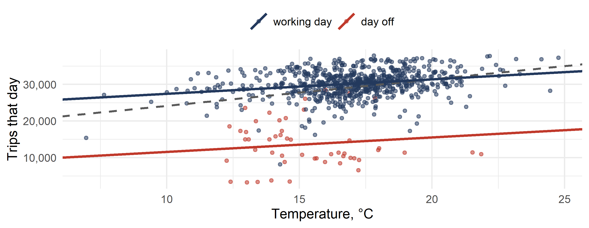
Write \(x_1 = x\) and \(x_2 = z\), measured from their means, with \(S_{11} = \sum x_{i1}^2\), \(S_{12} = \sum x_{i1} x_{i2}\), \(S_{22} = \sum x_{i2}^2\), \(S_{1y} = \sum x_{i1} y_i\) and \(S_{2y} = \sum x_{i2} y_i\). The formula slide gives \(\hat{\beta}_1 = (S_{22} S_{1y} - S_{12} S_{2y}) / (S_{11} S_{22} - S_{12}^2)\).
\(\displaystyle \hat{\beta}_1 = \frac{S_{1y} - \cssId{mt-delta}{\delta}\, S_{2y}}{S_{11} - \delta\, S_{12}}, \qquad \delta = \frac{S_{12}}{S_{22}}\)
Divide top and bottom by \(S_{22}\) \(\delta\) is the slope of a regression of \(x_1\) on \(x_2\): how much \(x_1\) moves with \(x_2\).
\(\displaystyle \hat{\beta}_1 = \boxed{\frac{\sum \cssId{mt-ri}{r_i}\,(y_i - \bar{y})}{\sum r_i^2}}\)
\(\displaystyle r_i = (x_{i1} - \bar{x}_1) - \delta\,(x_{i2} - \bar{x}_2)\)
Write the sums back out The top is \(\sum r_i (y_i - \bar{y})\). The bottom is \(\sum r_i^2\), because \(\delta^2 S_{22} = \delta S_{12}\). This is the W07 slope formula, with \(x_1\) replaced by \(r\).
\(r\) is the part of \(x_1\) that \(x_2\) cannot predict. Holding \(x_2\) fixed means: keep only that part of \(x_1\), and run the one-regressor regression of W07 on it.
With rain held fixed, one more μg/m³ of PM2.5 costs 87.9 trips (Exercise 7). Get the same number from regressions with one regressor each.
bikes$pm25 on bikes$rain. Save its residuals as bikes$pm25_r: how much dirtier or cleaner each day was than usual for its rain.bikes$trips on bikes$pm25_r. Compare its slope with the pm25 slope of the regression of bikes$trips on bikes$pm25 and bikes$rain.bikes$pm25_r with bikes$rain. What does it say?houses: regress houses$bdrms on houses$sqrft, save the residuals as houses$bdrms_r, and regress houses$price on houses$bdrms_r. Compare with the bedroom slope of Exercise 2, with size held fixed.bikes$pm25_r <- residuals(reg) stores the residuals of reg as a new column of bikes.
reg1 <- lm(pm25 ~ rain, data = bikes)
summary(reg1)
bikes$pm25_r <- residuals(reg1)
reg2 <- lm(trips ~ pm25_r, data = bikes)
summary(reg2)
reg3 <- lm(trips ~ pm25 + rain, data = bikes)
summary(reg3)
cor(bikes$pm25_r, bikes$rain)
reg4 <- lm(bdrms ~ sqrft, data = houses)
houses$bdrms_r <- residuals(reg4)
reg5 <- lm(price ~ bdrms_r, data = houses)
summary(reg5)Each mm of rain comes with 0.57 μg/m³ less PM2.5: that is the slope of reg1. Both pollution slopes are \(-87.9\) trips per μg/m³. pm25_r has a correlation of zero with rain, up to rounding: no trace of the rain is left in it.
For houses, the bedrooms that the size cannot predict give 15.2 thousand dollars per bedroom: the slope of Exercise 2 with size held fixed.
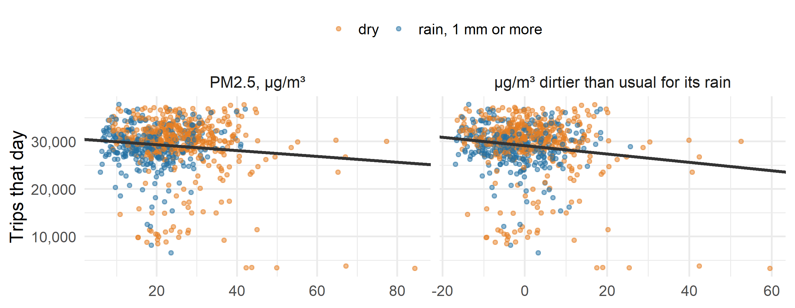
The cold-days example, with the days off held fixed in the same way.
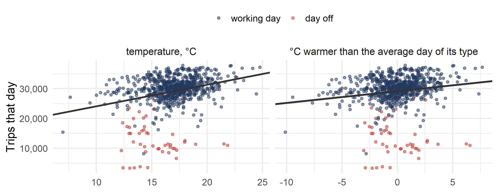
A schedule planner looks at the scheduled time only: do longer flights land earlier? What happens to the sched_time slope once the departure delay is held fixed?
flights$arr_delay on flights$sched_time alone.sched_time slope of Exercise 5, where flights$dep_delay is held fixed.flights$sched_time and flights$dep_delay.sched_time slope move? What does it mean for the planner?Alone, each extra scheduled hour takes 0.42 minutes off the arrival delay. With the departure delay held fixed, it takes 1.30: three times as much.
The correlation is 0.09: long flights leave a little later, and a late departure moves the arrival almost minute for minute. Alone, the later departures of long flights hide most of their slack. A planner who looks at the scheduled time alone sees much less slack than long flights really carry.
In the language of the rule: the departure delay moves the arrival almost minute for minute, and it moves a little with the scheduled time.
Near-copies are allowed, but they make each slope hard to pin down.
bikes$temp_yday is yesterday’s temperature. Riders may decide on today’s weather, or on what they remember from yesterday.
Today’s and yesterday’s temperature move together. What happens to the temperature slope, and to its standard error, when both go into the regression?
bikes$trips on bikes$temp and bikes$dayoff.bikes$temp_yday.temp and its standard error in the two regressions. What happened to \(R^2\)?bikes$temp and bikes$temp_yday. The first day has no yesterday, so use use = "complete.obs".The temp slope moves from 395 to 525 trips per degree, and its standard error from 59 to 90. Yesterday’s slope is -170: the wrong sign, and not significant at 5%. \(R^2\) barely moves: 0.559 to 0.562. The correlation is 0.76.
| Model | temp slope | SE of temp slope | R² |
|---|---|---|---|
| trips on temp and dayoff | 395 | 59 | 0.559 |
| trips on temp, temp_yday and dayoff | 525 | 90 | 0.562 |
For a forecast, collinearity costs little. For saying which cause matters, it costs a lot.
What does \(\hat{\boldsymbol{\beta}}\) draw? With one regressor, the fitted values lie on a line.
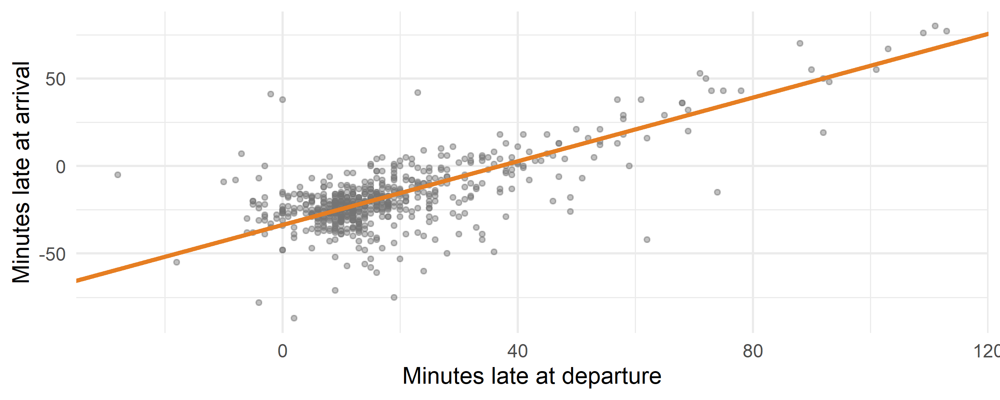
\(\widehat{\text{arr_delay}} = -33.5 + 0.910\,\text{dep_delay}\): two numbers, one line.
600 of the 11,887 flights are drawn; the line is fitted on all of them.
Minimise \(SSE(b_0, b_1, b_2) = \sum (y_i - b_0 - b_1 x_{i1} - b_2 x_{i2})^2\) without matrices. As in W07, set each derivative to zero. First the intercept.
\(\displaystyle \frac{\partial SSE}{\partial b_0} = -2 \sum_i e_i = 0\)
\(\displaystyle e_i = y_i - \hat{\beta}_0 - \hat{\beta}_1 x_{i1} - \hat{\beta}_2 x_{i2}\)
Derivative in \(b_0\) Each squared error changes by \(2e_i\) times \(-1\).
\(\displaystyle n\bar{y} - n\hat{\beta}_0 - \hat{\beta}_1\, n\bar{x}_1 - \hat{\beta}_2\, n\bar{x}_2 = 0\)
Sum each term \(\sum y_i = n\bar{y}\), \(\sum \hat{\beta}_0 = n\hat{\beta}_0\), \(\sum x_{i1} = n\bar{x}_1\), \(\sum x_{i2} = n\bar{x}_2\).
\(\displaystyle \hat{\beta}_0 = \bar{y} - \hat{\beta}_1 \bar{x}_1 - \hat{\beta}_2 \bar{x}_2\)
Divide by \(n\) The fitted plane passes through the point of means.
\(\displaystyle \boxed{SSE = \sum_i \left( \tilde{y}_i - b_1 \tilde{x}_{i1} - b_2 \tilde{x}_{i2} \right)^2}\)
Put \(\hat{\beta}_0\) back in With \(\tilde{y}_i = y_i - \bar{y}\), \(\tilde{x}_{i1} = x_{i1} - \bar{x}_1\), \(\tilde{x}_{i2} = x_{i2} - \bar{x}_2\): every variable measured from its mean. Two unknowns are left.
Write \(S_{11} = \sum \tilde{x}_{i1}^2\), \(S_{22} = \sum \tilde{x}_{i2}^2\), \(S_{12} = \sum \tilde{x}_{i1}\tilde{x}_{i2}\), \(S_{1y} = \sum \tilde{x}_{i1}\tilde{y}_i\), \(S_{2y} = \sum \tilde{x}_{i2}\tilde{y}_i\).
\(\displaystyle \frac{\partial SSE}{\partial b_1} = -2 \sum_i \tilde{x}_{i1}\, e_i = 0\)
\(\displaystyle e_i = \tilde{y}_i - \hat{\beta}_1 \tilde{x}_{i1} - \hat{\beta}_2 \tilde{x}_{i2}\)
Derivative in \(b_1\) Each squared error changes by \(2e_i\) times \(-\tilde{x}_{i1}\).
\(\displaystyle S_{11}\,\hat{\beta}_1 + {\color{#c0392b}{S_{12}}}\,\hat{\beta}_2 = S_{1y}\)
Split the sum, name each part \(\sum \tilde{x}_{i1}\tilde{y}_i - \hat{\beta}_1 \sum \tilde{x}_{i1}^2 - \hat{\beta}_2 \sum \tilde{x}_{i1}\tilde{x}_{i2} = 0\).
\(\displaystyle {\color{#c0392b}{S_{12}}}\,\hat{\beta}_1 + S_{22}\,\hat{\beta}_2 = S_{2y}\)
Derivative in \(b_2\) The same steps, with \(\tilde{x}_{i2}\) in front.
\(\displaystyle \left( S_{11} S_{22} - {\color{#c0392b}{S_{12}}}^2 \right) \hat{\beta}_1 = S_{22}\,S_{1y} - {\color{#c0392b}{S_{12}}}\,S_{2y}\)
Remove \(\hat{\beta}_2\) Multiply the first equation by \(S_{22}\) and the second by \(S_{12}\), then subtract.
\(\displaystyle \boxed{\hat{\beta}_1 = \frac{S_{22}\,S_{1y} - {\color{#c0392b}{S_{12}}}\,S_{2y}}{S_{11}\,S_{22} - {\color{#c0392b}{S_{12}}}^2}}\)
Divide \(\hat{\beta}_2\) is the same with 1 and 2 swapped.
“Held fixed, inside the formula” reaches the same result from \((\mathbf{X}^\top\mathbf{X})^{-1}\mathbf{X}^\top\mathbf{y}\). If \(x_1\) and \(x_2\) do not move together, \(S_{12} = 0\) and \(\hat{\beta}_1 = S_{1y}/S_{11}\): the one-regressor slope of W07.
\(\displaystyle \mathbf{X}\boldsymbol{\beta} = \begin{bmatrix} 1 & x_{11} & \cdots & x_{1k} \\ {\color{#e67e22}{1}} & {\color{#e67e22}{x_{21}}} & {\color{#e67e22}{\cdots}} & {\color{#e67e22}{x_{2k}}} \\ \vdots & \vdots & & \vdots \\ 1 & x_{n1} & \cdots & x_{nk} \end{bmatrix} \begin{bmatrix} {\color{#2471a3}{\beta_0}} \\ {\color{#2471a3}{\beta_1}} \\ \vdots \\ {\color{#2471a3}{\beta_k}} \end{bmatrix}\)
Check the sizes \(n \times (k+1)\) times \((k+1) \times 1\) gives \(n \times 1\): one number per flight.
\(\displaystyle \text{row 2} \times \boldsymbol{\beta} = {\color{#e67e22}{1}}\cdot{\color{#2471a3}{\beta_0}} + {\color{#e67e22}{x_{21}}}\,{\color{#2471a3}{\beta_1}} + \cdots + {\color{#e67e22}{x_{2k}}}\,{\color{#2471a3}{\beta_k}}\)
One row times \(\boldsymbol{\beta}\) Multiply each entry of the row by the matching \(\beta\), then add.
\(\displaystyle \mathbf{X}\boldsymbol{\beta} = \begin{bmatrix} \beta_0 + \beta_1 x_{11} + \cdots + \beta_k x_{1k} \\ {\color{#e67e22}{\beta_0 + \beta_1 x_{21} + \cdots + \beta_k x_{2k}}} \\ \vdots \\ \beta_0 + \beta_1 x_{n1} + \cdots + \beta_k x_{nk} \end{bmatrix}\)
Every row The same for each flight: its own \(x\)’s, the same \(\beta\)’s.
\(\displaystyle \boxed{y_i = \beta_0 + \beta_1 x_{i1} + \cdots + \beta_k x_{ik} + u_i}\)
Add \(\mathbf{u}\), read row \(i\) Row \(i\) of \(\mathbf{y} = \mathbf{X}\boldsymbol{\beta} + \mathbf{u}\) is the regression for flight \(i\).
The flights have \(k = 2\). The Monterrey flight, 40 minutes late and scheduled for 100 minutes, has the row \((1, 40, 100)\). Its forecast is \(\beta_0 + 40\,\beta_1 + 100\,\beta_2\).
OLS has picked the coefficients of the regression of flights$arr_delay on flights$dep_delay and flights$sched_time. Can either regressor still explain part of the errors that are left?
e.e.e with flights$dep_delay, and with flights$sched_time.residuals(reg) gives the residuals of a fitted regression reg.
All three are zero, up to rounding: R prints numbers like 1e-16. The errors average zero and move with neither regressor. Whatever the departure delay and the schedule can explain is already in the fitted line.
Four flights: minutes late at departure, scheduled time in hours, and minutes late at arrival.
| Flight | Departure delay \(x_1\) (minutes) | Scheduled time \(x_2\) (hours) | Arrival delay \(y\) (minutes) |
|---|---|---|---|
| 1 | 0 | 1 | −22 |
| 2 | 10 | 1 | −16 |
| 3 | 10 | 2 | −20 |
| 4 | 20 | 2 | −6 |
\[\mathbf{X} = \begin{bmatrix} {\color{#2471a3}{1}} & 0 & 1 \\ {\color{#2471a3}{1}} & 10 & 1 \\ {\color{#2471a3}{1}} & 10 & 2 \\ {\color{#2471a3}{1}} & 20 & 2 \end{bmatrix} \qquad \mathbf{y} = \begin{bmatrix} -22 \\ -16 \\ -20 \\ -6 \end{bmatrix}\]
The blue column of 1s carries the intercept.
\(\displaystyle \mathbf{X}^\top \mathbf{X} = \begin{bmatrix} 4 & 40 & 6 \\ 40 & 600 & 70 \\ 6 & 70 & 10 \end{bmatrix}\)
How the regressors move together Row by column: \(n = 4\), \(\sum x_1 = 40\), \(\sum x_1^2 = 600\), \(\sum x_2 = 6\), \(\sum x_1 x_2 = 70\), \(\sum x_2^2 = 10\).
\(\displaystyle (\mathbf{X}^\top \mathbf{X})^{-1} = \begin{bmatrix} 2.75 & 0.05 & -2 \\ 0.05 & 0.01 & -0.1 \\ -2 & -0.1 & 2 \end{bmatrix}\)
Untangle them The inverse: multiplied by \(\mathbf{X}^\top \mathbf{X}\) it gives the identity matrix.
\(\displaystyle \mathbf{X}^\top \mathbf{y} = \begin{bmatrix} -64 \\ -480 \\ -90 \end{bmatrix}\)
How each regressor moves with y \(\sum y = -64\), \(\sum x_1 y = -480\), \(\sum x_2 y = -90\).
\(\displaystyle \hat{\boldsymbol{\beta}} = (\mathbf{X}^\top \mathbf{X})^{-1} \mathbf{X}^\top \mathbf{y} = \boxed{\begin{bmatrix} -20 \\ 1 \\ -4 \end{bmatrix}}\)
Multiply One minute late at arrival per minute late at departure, for the same scheduled time; 4 minutes earlier per extra scheduled hour, for the same departure delay. The residuals are \(\pm 2\).